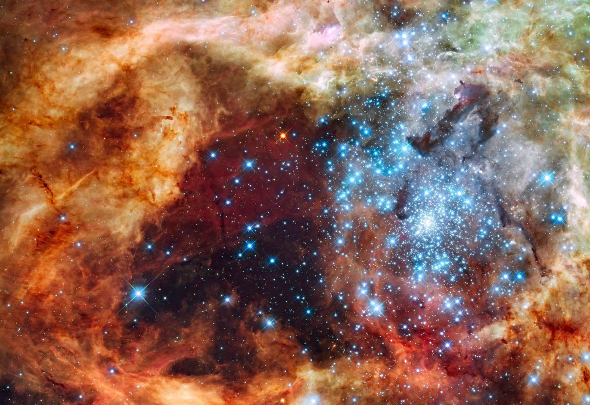
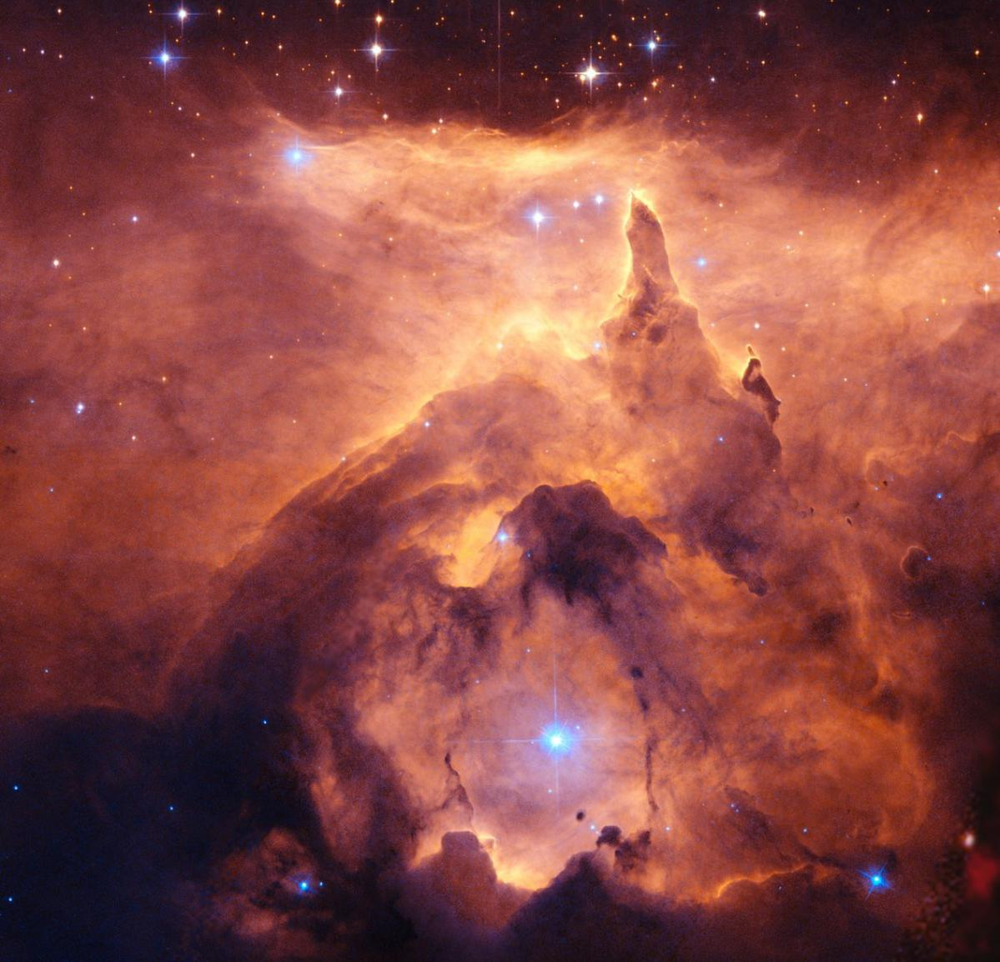
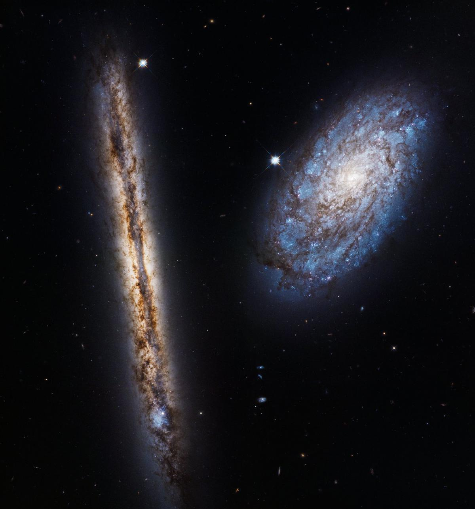
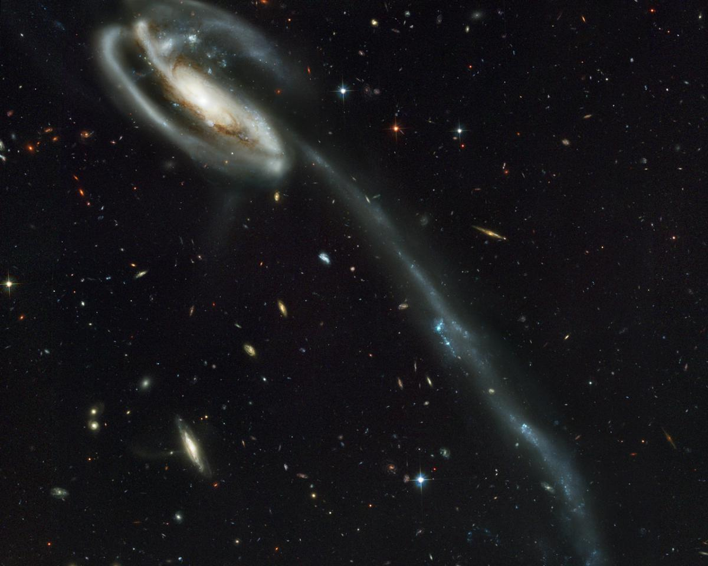
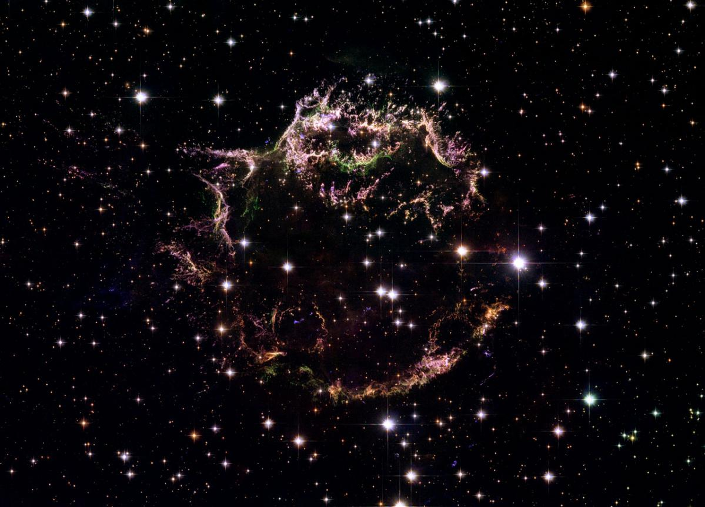
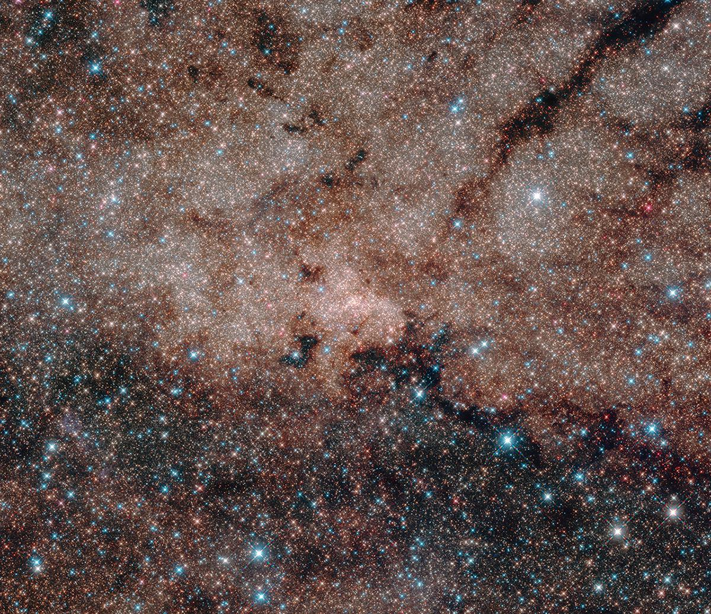
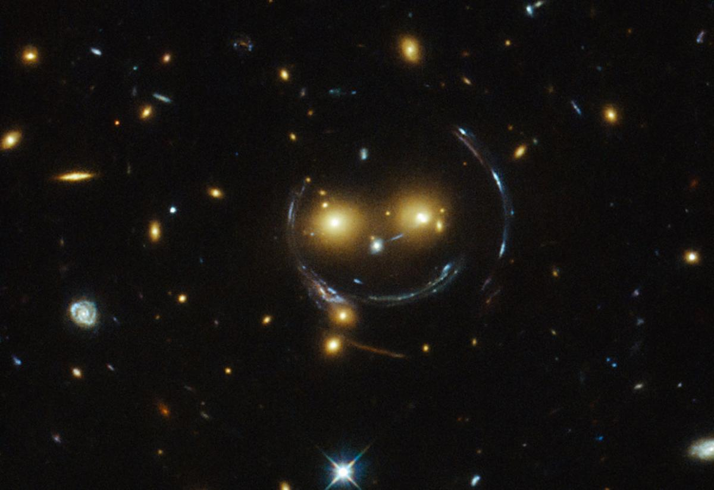
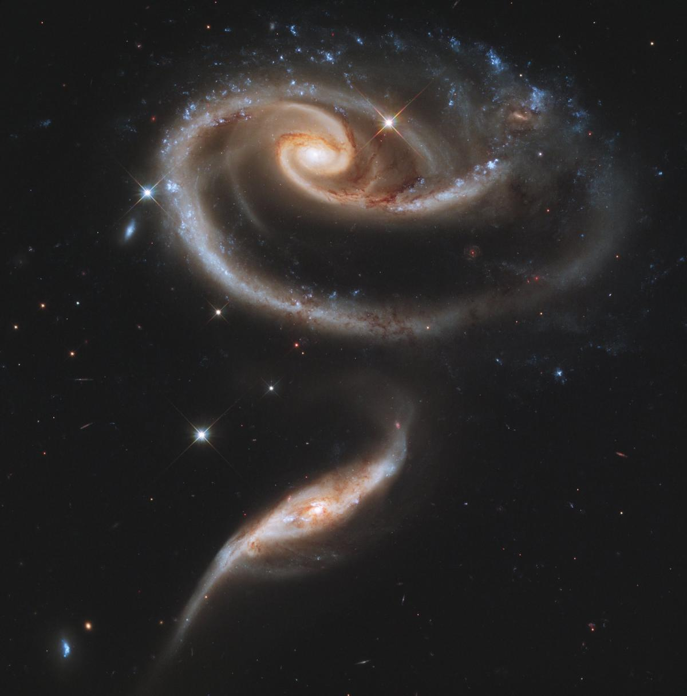

Cet amas stellaire, appelé Westerlund 2, se trouve dans la constellation de la Carène, dans la Voie lactée

Dans le Nuage de Magellan, on trouve aussi cet amas stellaire appelé R136. On y trouve de très jeunes nuages étoiles, seulement âgées de quelques millions d'années. Certaines d'entre ellessont 100 fois plus grosses que notre soleil.

Des étoiles sont également en formation dans cette région appelée S106, qui se trouve dans la constellation du Cygne, à 2 000 années-lumière de la Terre.

Même spectacle fascinant dans l'amas Pismis 24-1. Il se trouve à environ 7 500 années-lumières, de la Terre, dans la constellation du Scorpion.

Hubble n'a pas observé que des galaxies isolées ou au milieu de milliers d'autres. Le télescope a parfois pris en photo des galaxies voisines, comme NGC 4302 (gauche) et NGC 4298, situées à 60 millions d'années-lumières de la Terre. Ce cliché est un assemblage de quatre images prises entre le 2 et 22 janvier 2017.

La galaxie UGC 10214, surnommée la galaxie du Têtard, a une queue longue de 280 000 années-lumière.

Cette photo de Cassiopée A montre les restes d'une supernova. Celle-ci est survenue dans laVoie lactée. On y voit la complexe structure des lambeaux d'étoiles.

Pas besoin de regarder aussi loin pour s'émerveiller. Cette photo montre le cœur de notre galaxie, la Voie lactée, qui est particulièrement dense.

Les astronomes ont cru voir un smiley dans l'amas de galaxies SDSS J1038+4849. Les amas de galaxies sont les structures les plus massives de l'univers

Parfois, les galaxies s'effleurent et interagissent. Cette paire, appelée Arp 273, se trouve à environ 300 millions années-lumières de nous, dans la constellation d'Andromède. La plus grande des deux s'appelle UGC 1810. Sa compagne : UGC 1813.